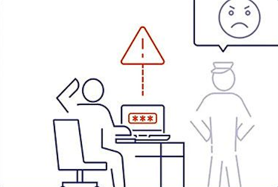
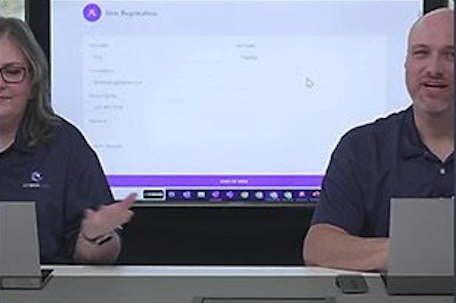

El gestor de contraseñas que se convertirá en tu aliado para proteger las aplicaciones de tu empresa.
Ikusi Workforce Password Management permite a las empresas capturar, almacenar y gestionar credenciales basadas en contraseñas para aplicaciones no integradas en SSO.

Gestiona contraseñas en la nube o almacén propio.

Distribuye acceso seguro entre usuarios autorizados.

Accede a tus aplicaciones fácilmente desde el portal.

Monitorea el uso y los accesos en tiempo real.

Aplica políticas estrictas sobre credenciales.

Descubre cómo fortalecer tu gestión de accesos.

Este servicio es un componente de CyberArk Identity Security Platform e integra SSO y MFA para ofrecer seguridad de extremo a extremo para las aplicaciones empresariales. Los usuarios pueden almacenar credenciales en su bóveda PAM, controlar aplicaciones en los portales de usuario y gestionar permisos con precisión. SLA de tiempo de actividad del 99.99%.
¡Da clic en el video y descúbrelo!


Gestiona contraseñas en la nube o almacén propio.

Distribuye acceso seguro entre usuarios autorizados.

Accede a tus aplicaciones fácilmente desde el portal.

Monitorea el uso y los accesos en tiempo real.

Aplica políticas estrictas sobre credenciales.

Descubre cómo fortalecer tu gestión de accesos.

Descubre cómo fortalecer tu gestión de accesos.

Descubre cómo fortalecer tu gestión de accesos.

Descubre cómo fortalecer tu gestión de accesos.

Descubre cómo fortalecer tu gestión de accesos.

Descubre cómo fortalecer tu gestión de accesos.
Te compartimos diversos materiales informativos sobre nuestra solución para que conozcas cómo mejorar la seguridad de las contraseñas de tus colaboradores.

El problema de los gestores de contraseñas
Las incidencias de personal necesitan practicidad en la gestión de contraseñas.

Proteja las contraseñas no se limite a administrarlas
Introducción: Lo que hay detrás de la SSO.

Workforce Password Management
Product Overview: How Does It Work?